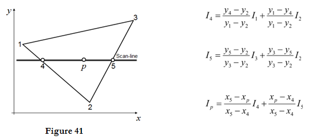
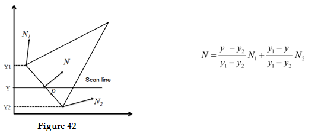

Gouraud Shading:
- Gouraud surface shading was developed in the 1970s by Henri Gouraud.
- It is the interpolation technique.
- Intensity levels are calculated at each vertex and interpolated across the surface.
- Intensity values for each polygon are matched with the values of adjacent polygons along the common edges.
- This eliminates the intensity discontinuities that can occur in flat shading.
- To render a polygon, Gouraud surface rendering proceeds as follows:
- Determine the average unit normal vector at each vertex of the polygon.
- Apply an illumination model at each polygon vertex to obtain the light intensity at that position.
- Linearly interpolate the vertex intensities over the projected area of the polygon
- Illumination values are linearly interpolated across each scan-line as shown in figure

- The intensities at point 4 can be interpolated from intensities 1 and 2.
- Similarly, the intensities at point 5 can be interpolated from intensities 2 and 3.
- Therefore the intensities of interaction points 4 and 5 are calculated from scan line.
Advantages:
- It removes the intensity discontinuity which exists in constant shading model.
- It can be combined with hidden surface algorithm to fill in the visible polygons along each scan line.
Disadvantages:
- Gouraud shading has a problem with specular reflections.
- Gouraud shading can introduce anomalies known as Mach bands.
Phong Shading:
- A more accurate interpolation based approach for rendering a polygon was developed by Phong Bui Tuong.
- Basically the Phong surface rendering model is also called as normal-vector interpolation rendering.
- It interpolates normal vectors instead of intensity values.
- To render a polygon, Phong surface rendering proceeds as follows:
- Determine the average unit normal vector at each vertex of the polygon.
- Linearly interpolate the vertex normal over the projected area of the polygon.
- Apply an illumination model at positions along scan lines to calculate pixel intensities using the interpolated normal vectors as shown in figure

Advantages:
- It displays more realistic highlights on a surface.
- It greatly reduces the Mach band effect.
- It gives more accurate results.
Disadvantages:
- It requires more calculations and greatly increases the cost of shading steeply.